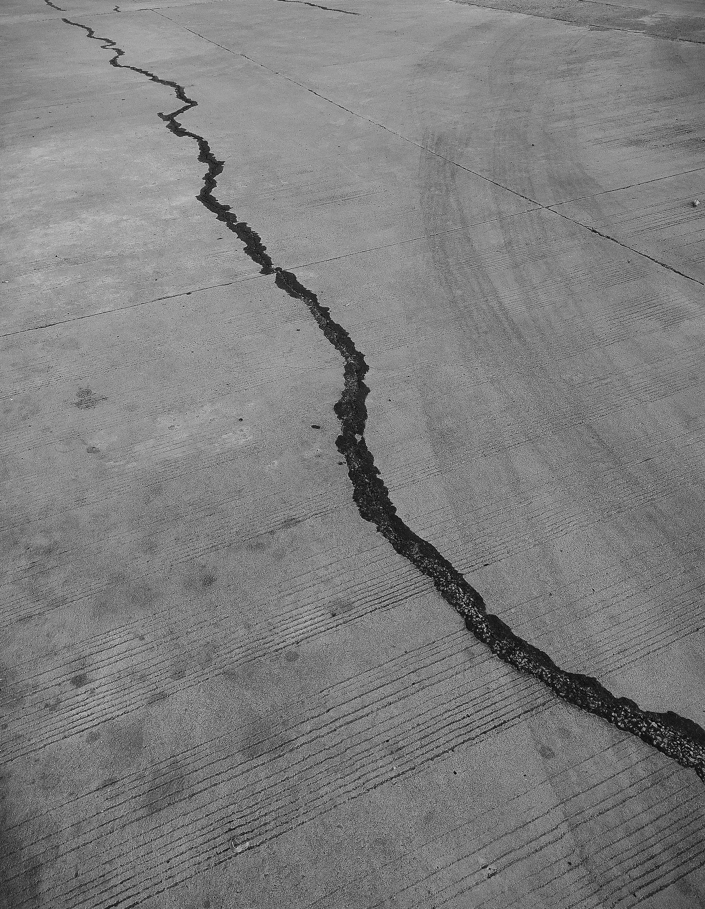

“… 갑자기 다리가 멈췄어. 마치 누가 내 발목을 꽉 잡고 있는 것처럼 꼼짝도 할 수 없었어.” 민수는 숨을 헐떡이며 말했다. “모두가 나를 지나쳐 달려가는 모습이 보였어. 결승선이 바로 저 앞인데…” 그는 고개를 저으며 말을 잇지 못했다.
[“…Suddenly, my legs stopped. It was like someone was holding my ankles tight, and I couldn’t move an inch,“ Minsu said, gasping for breath. "I could see everyone running past me. The finish line was right there…” He shook his head, unable to continue.]
"그래서, 그래서 어떻게 됐는데?” 영희는 초조하게 물었다. 그녀의 눈은 걱정으로 가득 차 있었다. 민수는 마치 과거의 기억 속으로 빨려 들어가는 듯 눈을 감았다.
[“So, so what happened?” Yeonghee asked anxiously. Her eyes were filled with worry. Minsu closed his eyes as if he was being sucked back into a past memory.]
“그때였어.” 민수는 나지막이 말했다. “땅이 흔들리기 시작했어.”
[“That’s when it happened,” Minsu said quietly. “The ground started shaking.”]
처음에는 미세한 진동이었다. 마치 거대한 트럭이 멀리서 지나가는 듯한 느낌이었다. 하지만 진동은 점점 강해졌고, 사람들은 이상함을 느끼기 시작했다.
[At first, it was just a faint tremor. It felt as if a giant truck was passing by in the distance. But the tremor grew stronger, and people started to feel uneasy.]
“뭐지?” 누군가 중얼거렸다. 그 순간, 땅이 격렬하게 흔들리기 시작했다. 사람들은 비명을 지르며 균형을 잃고 넘어졌다.
[“What was that?” someone muttered. At that moment, the ground started to shake violently. People screamed, losing their balance and falling.]
민수는 넘어지지 않으려고 애쓰며 두 팔을 벌렸다. 그의 눈앞에서 결승선 아치가 마치 종이로 만든 것처럼 좌우로 격렬하게 흔들렸다.
[Minsu stretched out his arms, struggling to stay on his feet. Before his eyes, the finish line arch swayed violently from side to side, as if it were made of paper.]
“지진이다!” 누군가 소리쳤다. 공포가 마치 바이러스처럼 빠르게 사람들 사이로 퍼져나갔다.
[“Earthquake!” someone shouted. Fear spread like a virus among the people.]
사람들은 서로 부딪히고 넘어지면서 출구를 찾아 아우성쳤다. 운동장은 순식간에 아수라장으로 변했다. 먼지가 자욱하게 피어올라 시야를 가렸고, 사람들의 비명 소리와 땅이 갈라지는 굉음이 뒤섞여 아비규환이었다.
[People collided and fell as they scrambled for the exit, screaming in terror. The athletic field turned into chaos in an instant. Dust rose, obscuring the view, and the screams of people mixed with the roar of the earth splitting, creating a scene of utter pandemonium.]
민수는 땅바닥에 주저앉아 머리를 감쌌다. 모든 것이 마치 재난 영화의 한 장면 같았다. 그의 심장은 공포로 미친 듯이 뛰었다.
[Minsu crouched down, covering his head with his arms. It was like a scene from a disaster movie. His heart pounded in his chest, overwhelmed with fear.]
그때였다.
[That’s when it happened.]
“민수야!”
[“Minsu!”]
익숙한 목소리가 들렸다. 민수는 고개를 들어 소리가 나는 쪽을 바라보았다.
[A familiar voice called out. Minsu raised his head and looked towards the sound.]
뿌연 먼지 사이로 영희가 보였다. 그녀는 울먹이는 얼굴로 민수에게 달려오고 있었다.
[Through the thick dust, Minsu could see Yeonghee. She was running towards him, her face streaked with tears.]
“영희야!” 민수는 자리에서 벌떡 일어나 영희를 향해 달려갔다. 두 사람은 서로에게 달려가 품에 안겼다.
[“Yeonghee!” Minsu jumped to his feet and ran towards her. They collided with each other and held on tight.]
“괜찮아? 다친 곳은 없니?” 민수는 영희의 어깨를 잡고 위아래로 훑어보며 물었다. 그의 목소리는 걱정으로 가득했다.
[“Are you okay? Are you hurt?” Minsu asked, scanning her body for any injuries. His voice was full of concern.]
영희는 고개를 저으며 눈물을 닦았다. “나… 나는 괜찮아. 너는?”
[Yeonghee shook her head, wiping away her tears. “I… I’m okay. What about you?”]
“나도 괜찮아.” 민수는 안도의 한숨을 내쉬었다. “하지만 여기 있으면 위험해. 빨리 여기서 나가야 해.”
[“I’m okay too,” Minsu sighed in relief. “But it’s dangerous to stay here. We need to get out of here.”]
민수는 영희의 손을 잡고 흔들리는 운동장을 가로질러 달리기 시작했다. 주변은 여전히 아수라장이었다. 사람들은 패닉에 빠져 우왕좌왕하고 있었고, 여기저기서 울음소리와 비명 소리가 끊이지 않았다.
[Minsu grabbed Yeonghee’s hand and started running across the shaking field. The surroundings were still in chaos. People were panicking and running around in confusion, the sound of crying and screaming filling the air.]
출구는 아직 멀게만 느껴졌다. 민수는 영희의 손을 놓치지 않으려 더욱 세게 움켜쥐었다. 그의 심장은 여전히 격렬하게 뛰고 있었지만, 영희와 함께 있다는 사실이 그에게 용기를 주었다.
[The exit still felt far away. Minsu held Yeonghee’s hand tighter, determined not to let go. His heart was still racing, but being with her gave him courage.]
그때였다. 민수는 발밑에서 무언가 갈라지는 듯한 소리를 들었다.
[That’s when he heard it. A cracking sound beneath his feet.]
“영희야, 조심해!” 민수는 본능적으로 영희를 옆으로 밀쳤다.
[“Yeonghee, watch out!” Minsu instinctively shoved Yeonghee to the side.]
그 순간, 땅이 쩍 소리를 내며 갈라졌다. 민수는 균형을 잃고 갈라진 틈 사이로 떨어졌다.
[At that moment, the ground split open with a deafening crack. Minsu lost his balance and tumbled into the chasm.]
“민수야!” 영희의 비명 소리가 멀어져 갔다.
[“Minsu!” Yeonghee’s scream echoed in the distance.]
어둠뿐이었다.
[There was only darkness.]